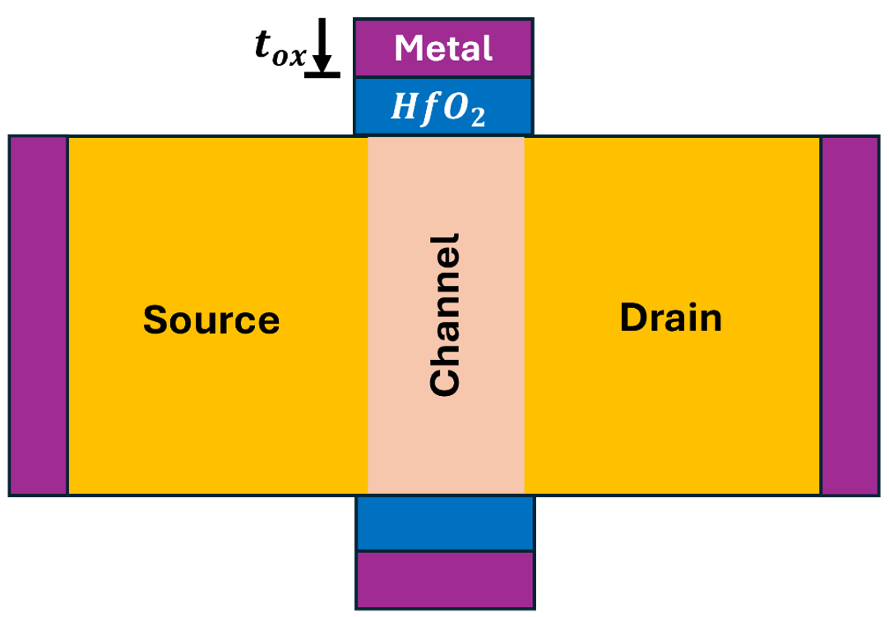
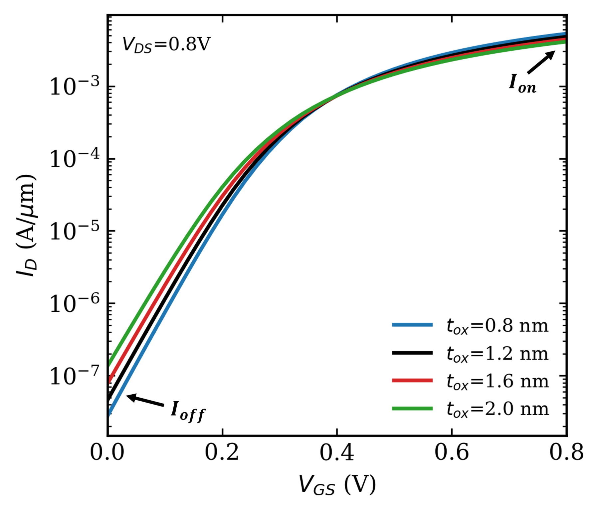
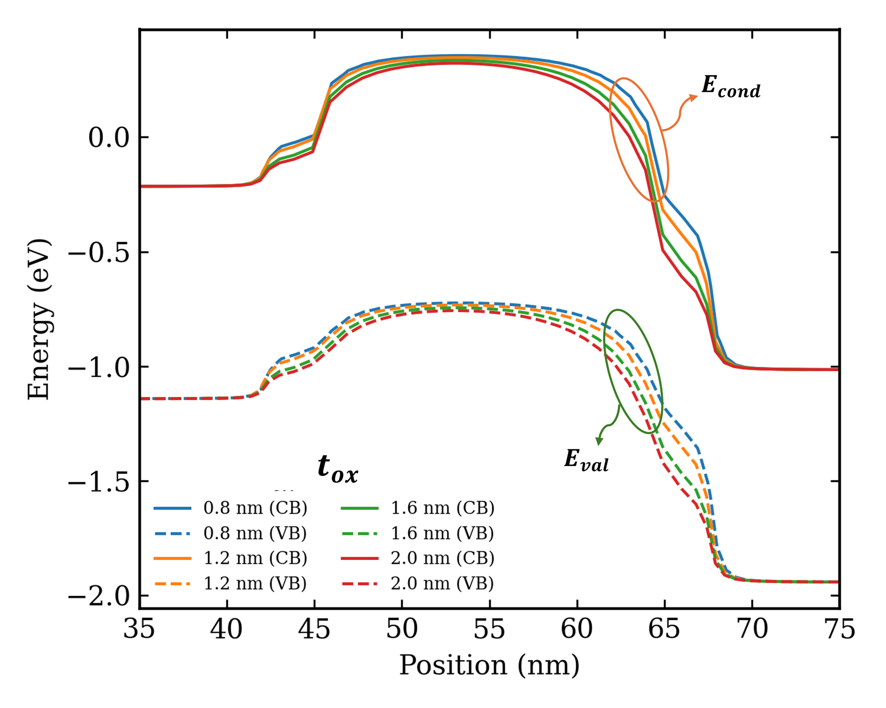
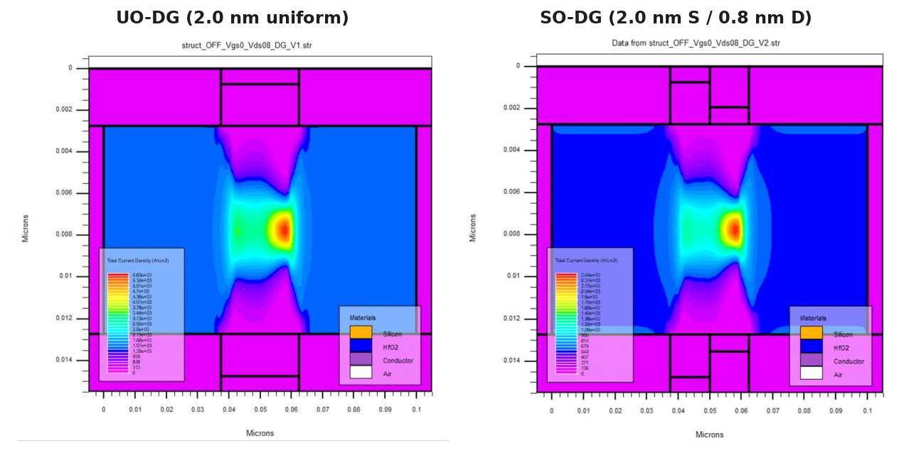
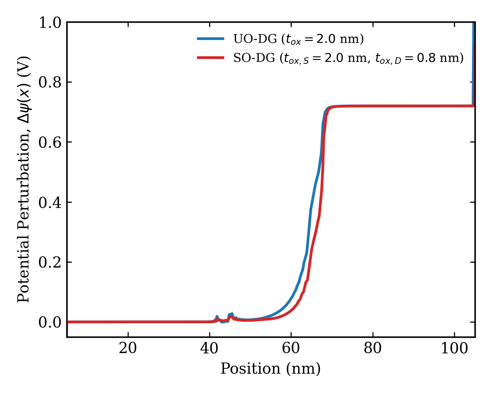
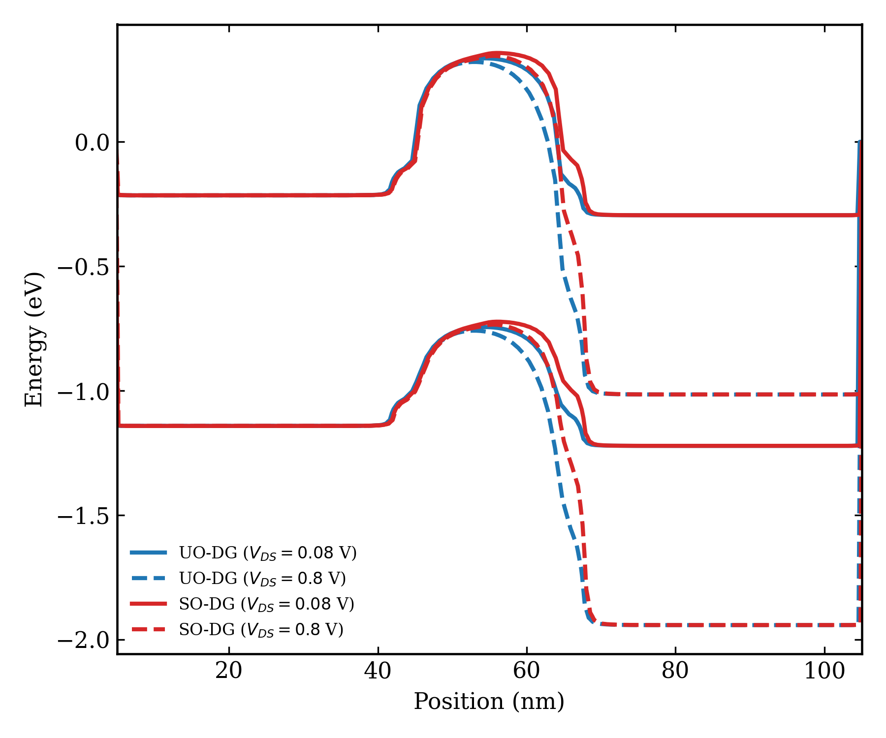
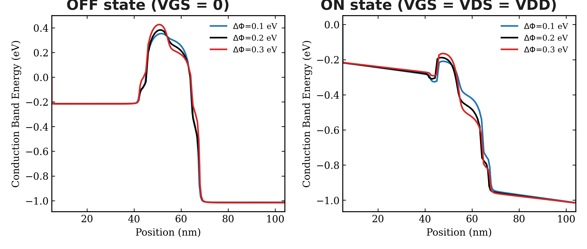
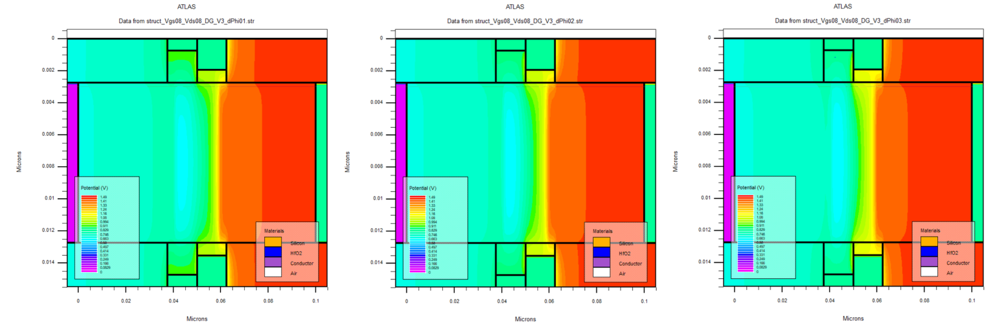
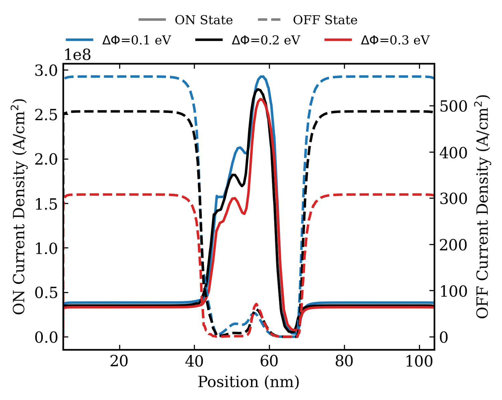
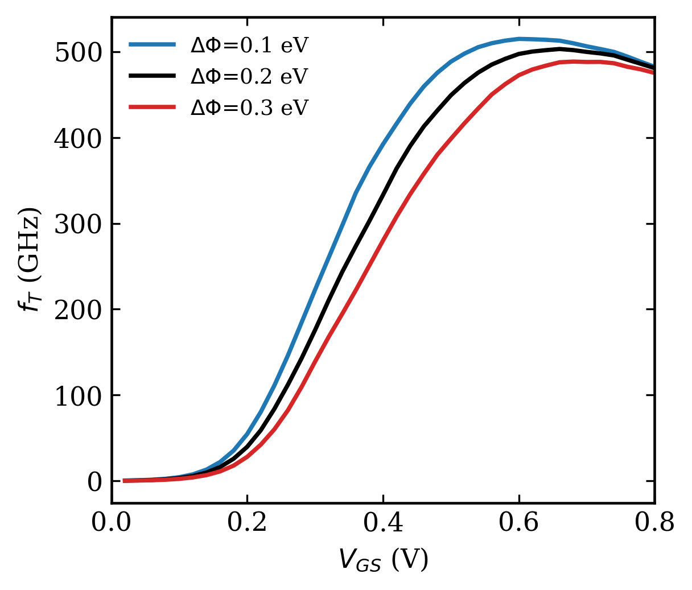

Abstract
The continued scaling of Double-Gate (DG) MOSFETs is severely constrained by short-channel effects (SCEs), predominantly Drain-Induced Barrier Lowering (DIBL). This study investigates a sequential structural engineering methodology to decouple source and drain electrostatics. By integrating an asymmetric Step-Oxide (SO), a Dual-Material Gate (DMG), and localized Halo Doping, the device achieves a DIBL reduction from a baseline of 67.21 mV/V down to sub-30 mV/V, whilst preserving ON-state performance and RF metrics.
Use the interactive stage viewer on the right to examine the sequential architectural progression from standard uniform oxide to fully optimized halo-engineered profiles.
Structural Evolution Stages

Fig 1. Baseline Uniform Oxide (UO) structure showing standard gate oxide thickness $t_{ox}$ across the channel region between source and drain.
I. The Uniform Oxide (UO) Scaling Limit
Initial calibration of a 20 nm DG-MOSFET with a uniform oxide layer demonstrates the fundamental limitations of standard scaling. While aggressively thinning the gate oxide (down to 0.8 nm) improves electrostatic control, it leads to unacceptable levels of direct gate tunneling.
Conversely, utilizing a thicker oxide (2.0 nm) to guarantee gate reliability severely degrades the Subthreshold Swing (SS) and causes massive Drain-Induced Barrier Lowering (DIBL) as drain potential easily penetrates the channel.
Uniform Oxide Performance Trends

Fig 5. Transfer characteristics ($I_D-V_{GS}$) for Uniform Oxide. The OFF-current degrades significantly at $t_{ox} = 2.0$ nm.

Fig 6. Energy band diagram. The barrier at the source side lowers noticeably as oxide thickness increases, failing to block drain potential.
II. Electrostatic Decoupling via Step-Oxide (SO-DG)
To resolve the conflict between tunneling and electrostatics, an asymmetric Step-Oxide architecture is implemented. By maintaining a thick oxide (2.0 nm) at the source end and a thin oxide (0.8 nm) at the drain end, the device physically restricts the drain's electric field from reaching the source barrier. This localized structural change fundamentally alters the current density and potential landscape.

Fig 7. Current density distribution comparison showing enhanced carrier confinement in the SO-DG configuration.

Fig 8. Surface potential perturbation. The step oxide effectively pins the potential step closer to the drain.

Fig 9. Energy band profiles for Step-Oxide. The source barrier height remains remarkably stable even at high drain biases ($V_{DS} = 0.8V$), proving the shielding effect of the asymmetric geometry.
III. Barrier Modulation using Dual-Material Gate (DMSO-DG)
To further immunize the device against SCEs, the gate electrode is split into two materials with differing work functions ($M_1$ near the source, $M_2$ near the drain). This work-function differential ($\Delta\Phi$) artificially induces a step in the channel potential, reinforcing the source-side injection barrier.

Fig 10. Conduction band profiling across various work-function differences ($\Delta\Phi$). A larger $\Delta\Phi$ creates a steeper, more resilient barrier against DIBL.

Fig 11. 2D contour mapping of the internal potential, vividly illustrating the abrupt transition introduced by the metal-metal boundary.

Fig 12. ON and OFF state current densities. The DMG architecture significantly crushes OFF-state leakage while maintaining reasonable ON-drive.

Fig 13. RF Performance analysis. While higher $\Delta\Phi$ benefits electrostatics, a trade-off is observed in the peak cutoff frequency ($f_T$).
IV. Depletion Confinement via Halo Optimization
The final stage of mitigation addresses the lateral expansion of the drain depletion region. By introducing localized, heavily doped $P^+$ 'halos' or pockets immediately adjacent to the source/drain extensions, the depletion width is physically bounded.
However, halo concentration must be strictly calibrated. Excessive doping degrades carrier mobility through impurity scattering and drastically alters the threshold voltage, negating previous high-frequency gains. As visualized, a concentration of $2\times10^{18} \text{ cm}^{-3}$ yields the optimum balance, reducing DIBL to a remarkable 28.4 mV/V.
Impact of Halo Concentration on Electrostatics
Fig 14. DIBL and Subthreshold Swing evolution as a function of Halo Doping Concentration.